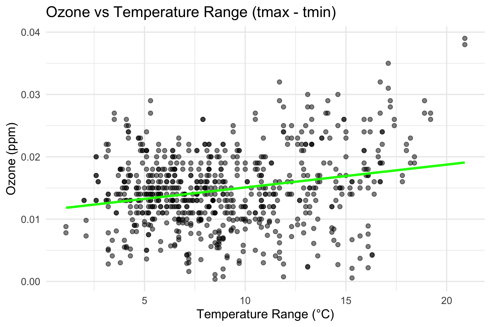
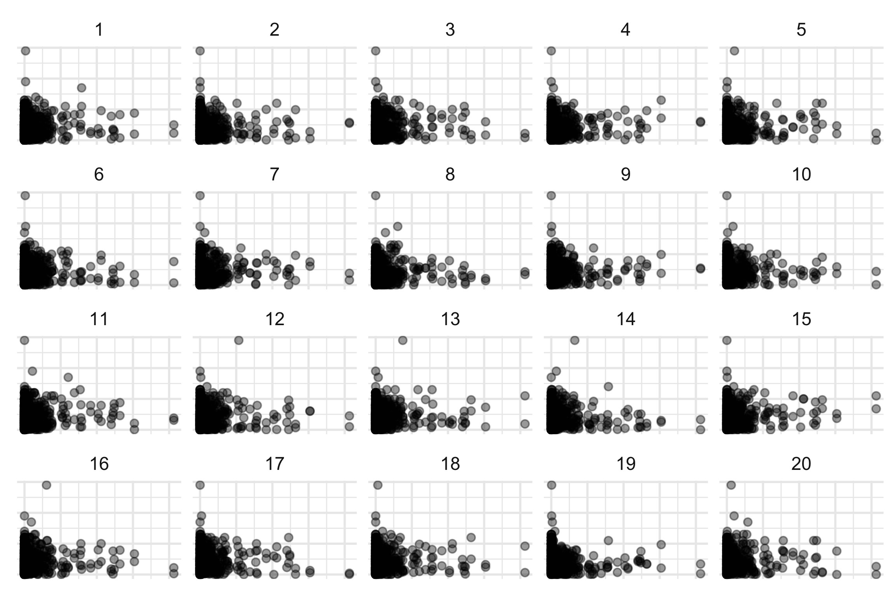

The Relationship Between Weather and Atmospheric Pollutants
Group Project
Author
Travis Rutledge and Pooja Rajendran Raju
Published
November 28, 2024
Introduction
The purpose of this report is to explore the relationship between air pollution and weather in Australia. Four research questions will be addressed:
Do higher temperatures lead to increase in the formation of ground-level ozone?
Does rain and snow wash out particular matter and water-soluble gases from the air?
Do high pressure systems often lead to stagnant air trapping pollutants?
Does sunlight drive photochemical reactions that form secondary pollutants like ozone?
To answer these questions, data was pulled, cleaned, compiled, and analysed. The following sections will describe the data and then answer the research questions using visual inference and other analytical approaches.
Data Description
Data Pull
Data were pulled from two data sources. First, air pollution data was pulled from OpenAQ (OpenAQ 2015) using the airpurifyr R package (Lakshika 2024). OpenAQ is the world’s largest open-source air quality data platform. Second, weather data was pulled from SILO (Long Paddock n.d.) using the weatherOz R package (Pires 2024). SILO is a database of Australian climate data from 1889 to the present. After air pollution and weather data were pulled, the data sets were joined based on date.
Data was pulled from Alphington and Footscray in Melbourne, Victoria. These locations were chosen because they had the most amount of data available over a full year. Our team originally wanted to pull data from both Melbourne and Sydney to be consistent with our analysis between the two cities, but that proved not possible because there was not a full year’s worth available for the same time period. So, our solution was to focus on pulling data from locations that had the most amount of data over the same time period. Ultimately, the best solution was to pull from Alphington and Footscray for 2022.
Each observation in the air pollution data set was the value of a given air pollutant for a specific hour of a specific day. For the purpose of our analysis, these hourly data records were aggregated to daily records by calculating the average pollution values for each day. The weather data was already at a daily level, so no aggregation was necessary. Data sets were then saved as .rds files.
The following code was used to pull the data:
Code
#2022 Alphingtonalphington2022 <-get_measurements_for_location(country ="AU", location ="Alphington",date_from =as.Date("2022-01-01"),date_to =as.Date("2022-12-31")) %>%mutate(date =as.Date(date_utc)) %>%group_by(date, parameter, location, unit, lat, long, country) %>%mutate(avg_value =mean(value, na.rm =TRUE)) %>%distinct(date, parameter, location, unit, lat, long, country, avg_value) %>%mutate(avg_value =format(avg_value, scientific =FALSE),lat =round(lat, 2), long =round(long, 2)) #2022 Footscrayfootscray2022 <-get_measurements_for_location(country ="AU", location ="Footscray",date_from =as.Date("2022-01-01"),date_to =as.Date("2022-12-31")) %>%mutate(date =as.Date(date_utc)) %>%group_by(date, parameter, location, unit, lat, long, country) %>%mutate(avg_value =mean(value, na.rm =TRUE)) %>%distinct(date, parameter, location, unit, lat, long, country, avg_value) %>%mutate(avg_value =format(avg_value, scientific =FALSE),lat =round(lat, 2), long =round(long, 2)) #union the dataair_data <-rbind(alphington2022,footscray2022) |>mutate(date =as.Date(date))#save air pollution data as RDSsaveRDS(air_data, file ="airdata.rds")#pull silo datasilo <-get_data_drill(latitude =-38,longitude =145,start_date ="20220101",end_date ="20221231",values =c("max_temp","min_temp","rain", "mslp","vp","vp_deficit","radiation" ) ) %>%rename(lat = latitude, long = longitude) #save silo data as RDSsaveRDS(silo, file ="silo.rds")
Data Cleaning and Joining
After the data was pulled, they were cleaned, made into a tidy format, and joined together. This involved removing unnecessary variables and using a left join that prioritized the air pollution data. The following code was used for this process:
The dataset contains 14 variables and 4261 observations.
The following are the variables used in this analysis:
Variable
Description
Source
date
Date when the data was recorded
OpenAQ and SILO
parameter
Pollutant parameters (ex: pm25, pm10, so3)
OpenAQ
location
Location name
OpenAQ
unit
Unit of measurement
OpenAQ
avg_value
Measurement of parameter for that day
OpenAQ
month
Month when the data was recorded
SILO
day
Day when the data was recorded
SILO
air_tmax
The maximum temperature for the day in C
SILO
air_tmin
The minimum temperature for the day in C
SILO
mslp
Mean sea level pressure in hPa
SILO
radiation
Solar exposure in \(MJ/m^2\)
SILO
rainfall
Daily rainfall in mm
SILO
vp
Vapour pressure in hPa
SILO
vp_deficit
Vapour pressure deficit in hPa
SILO
Data Screening
Code
vis_dat(air_and_weather_data)
Understanding the composition of variable types in the dataset using ‘vis_dat’. Here, the dataset primarily comprises of character type variables, date type variables, numeric and integer variables.
#Converting data to wider form to explore missingness data_wider <- air_and_weather_data |>select(-unit) |>pivot_wider(names_from = parameter,values_from = avg_value)#write.csv(data_wider, file = "data/data_wider.csv", row.names = FALSE)# Calculating the missing percentagemissing_summary <- data_wider |>summarise(across(everything(), ~sum(is.na(.)) /n() *100)) |>pivot_longer(cols =everything(),names_to ="variable", values_to ="missing_percentage") #Plotting the missing percentage for each variableggplot(missing_summary, aes(x =reorder(variable,-missing_percentage), y = missing_percentage)) +geom_segment(aes(xend = variable, yend =0), color ="blue") +geom_point(size =2, color ="black") +coord_flip() +labs(title ="Missing Data Percentage",x ="Pollutant",y ="Missing Percentage (%)") +theme_minimal()
Based on the above plot, we can infer that the data is relatively complete with minimal missing values. Parameters no2, co, pm10 and pm25 have missing values less than 5%.
Specific Date Analysis of Missing Data
Code
missing_specific <- data_wider |>as_tsibble(key = location, index = date)count_gaps(missing_specific)
Between February and December 2022, both Alphington and Footscray had overlapping gaps on February 6th and from March 23rd to March 24th, while Footscray experienced unique missing data on the other three days: September 25th, November 23rd, and December 18th.
Relationship 1
Higher temperatures can increase the formation of ground-level ozone
The current research question explores whether higher temperatures drive the formation of ground-level ozone, a secondary pollutant influenced by atmospheric conditions. This analysis focuses on ozone (O3) levels, examining how variations in daily maximum and minimum temperatures (measured in degrees Celsius) relate to ozone concentrations. The following section investigates the correlation between temperature and ozone, aiming to understand the extent to which warmer conditions may promote ozone formation.
Evaluating Monthly Temperature Variation
Code
data_wider$month <-as.factor(data_wider$month)# Max Daily Tempp1 <-ggplot(data_wider, aes(x=month, y=air_tmax)) +geom_violin(draw_quantiles=c(0.25, 0.5, 0.75), fill="#56B4E9") +labs(x ="Month", y ="Max Daily Temp (°C)") +theme_minimal()# Min Daily Tempp2 <-ggplot(data_wider, aes(x=month, y=air_tmin)) +geom_violin(draw_quantiles=c(0.25, 0.5, 0.75), fill="#56B4E9") +labs(x ="Month", y ="Min Daily Temp (°C)") +theme_minimal() p1/p2
The violin plot provides context on the monthly maximum and minimum temperature distribution for Melbourne. Both maximum and minimum daily temperatures are highest during the summer months (December to February), especially in January, while the winter months (June to August) experience the lowest and most stable temperatures.
April and October show moderate temperature variability, serving as transitional months. Overall, summer and early autumn months are warmer, so if higher temperatures increase the formation of ground-level ozone, elevated ozone levels should be more apparent in these months. In contrast, winter months, with their consistently lower temperatures, would likely see reduced ozone formation.
Evaluating Average Variation of Ozone compared to Max and Min Temperature
Code
# Average tmax, tmin, and O3 levelstemp_oz_summary <- data_wider %>%group_by(month) %>%summarise(avg_tmax =mean(air_tmax, na.rm =TRUE),avg_tmin =mean(air_tmin, na.rm =TRUE),avg_o3 =mean(o3, na.rm =TRUE))ggplot(temp_oz_summary, aes(x = month)) +geom_line(aes(y = avg_tmax, color ="Max Temperature (°C)", group =1), size =1.2) +geom_line(aes(y = avg_tmin, color ="Min Temperature (°C)", group =1), size =1.2) +geom_line(aes(y = avg_o3 *1000, color ="Ozone (O3 in ppm)", group =1), size =1.2) +scale_y_continuous(name ="Temperature (°C)", sec.axis =sec_axis(~./1000, name ="Ozone (ppm)")) +labs(x ="Month", title ="Average Max Temp, Min Temp, and Ozone Levels Over 12 Months") +scale_color_manual(values =c("Max Temperature (°C)"="blue", "Min Temperature (°C)"="green","Ozone (O3 in ppm)"="red")) +theme_minimal() +theme(legend.title =element_blank())
These line graphs show the average maximum temperature, minimum temperature, and ozone levels across each month. The maximum and minimum temperatures follow a typical seasonal pattern, as observed in the earlier violin plots.
Ozone levels display a clear seasonal pattern aligned with temperature, peaking during the summer months (December to February) when both maximum and minimum daily temperatures are highest. This supports the expectation that higher temperatures facilitate ground-level ozone formation. Ozone levels remain relatively elevated in March before declining as temperatures start to drop in autumn.
During the winter months (June to August), ozone levels dip to their lowest, particularly in July, which aligns with the coldest temperatures of the year.
However, there are unexpected ozone peaks in June and September, which do not correspond with high temperatures. These anomalies suggest that factors such as high-pressure systems or local emissions may occasionally cause ozone levels to rise independently of temperature, particularly during transitional or atypical weather periods.
Examining Relationships Using Scatterplots
Code
# air_tmax vs. O3p3 <-ggplot(data_wider, aes(y = o3, x = air_tmax)) +geom_point(alpha =0.5, color ="blue") +geom_smooth(method ="lm", se =FALSE, color ="darkblue") +labs(title ="Max Temperature vs Ozone",y ="Ozone (ppm)",x ="Max Temperature (°C)") +theme_minimal()# air_tmin vs. O3p4 <-ggplot(data_wider, aes(y = o3, x = air_tmin)) +geom_point(alpha =0.5, color ="red") +geom_smooth(method ="lm", se =FALSE, color ="darkred") +labs(title ="Min Temperature vs Ozone",y ="Ozone (ppm)",x ="Min Temperature (°C)") +theme_minimal()grid.arrange(p3, p4, ncol =2)
Based on the scatter plots the following observations can be made:
There is a moderately positive relationship between maximum temperature and ozone, indicated by the steeper slope and tighter clustering of points around the trend line. This suggests that as daily maximum temperatures rise, ozone levels tend to increase.
Similarly, there is a positive relationship between minimum temperature and ozone, though it appears slightly weaker based on the lower gradient of the trend line and more dispersed points around it. This indicates that while warmer minimum temperatures are also associated with higher ozone levels, the effect is less pronounced than for maximum temperatures.
Overall, both maximum and minimum temperature trends provide evidence that temperature plays a key role in ozone formation. Further analysis through linear modeling could help quantify these relationships more precisely.
Evaluating How The Daily Temperature Difference Affects Ozone Formation
Code
# Daily temperature range (tmax - tmin)data_wider$temperature_range <- data_wider$air_tmax - data_wider$air_tmin# Ozone vs Temperature Rangeggplot(data_wider, aes(x = temperature_range, y = o3)) +geom_point(alpha =0.5) +geom_smooth(method ="lm", se =FALSE, color ="green") +labs(title ="Ozone vs Temperature Range (tmax - tmin)",x ="Temperature Range (°C)", y ="Ozone (ppm)") +theme_minimal()

There is a slight tendency for ozone levels to increase as the daily temperature range grows, but the relationship is weak, as indicated by the nearly flat trend line.
This minimal increase suggests that while a larger temperature range might have some influence, it is not a strong determinant of ozone formation.
Overall, absolute temperatures (highs or lows) are more important for ozone formation than the daily difference between maximum and minimum temperatures.
Linear Models
Linear Modeling of Ozone with Max Temperature
Code
lm_tmax <-lm(o3 ~ air_tmax, data = data_wider)summary(lm_tmax)
Call:
lm(formula = o3 ~ air_tmax, data = data_wider)
Residuals:
Min 1Q Median 3Q Max
-0.015001 -0.003620 -0.000515 0.003845 0.016662
Coefficients:
Estimate Std. Error t value Pr(>|t|)
(Intercept) 5.59e-03 7.37e-04 7.59 1e-13 ***
air_tmax 4.59e-04 3.58e-05 12.83 <2e-16 ***
---
Signif. codes:
0 '***' 0.001 '**' 0.01 '*' 0.05 '.' 0.1 ' ' 1
Residual standard error: 0.0055 on 719 degrees of freedom
Multiple R-squared: 0.186, Adjusted R-squared: 0.185
F-statistic: 165 on 1 and 719 DF, p-value: <2e-16
The linear model shows a statistically significant positive relationship between maximum temperature and ozone levels: for each 1°C increase in maximum temperature, ozone levels increase by an estimated 0.000459 ppm.
With extremely low p-values for both the intercept and slope, the model confirms that maximum temperature is a highly significant predictor of ozone levels. Additionally, the F-statistic p-value is far below the 0.01 threshold, indicating very strong overall model significance.
However, the model’s R-squared value (0.186) suggests that maximum temperature explains only 18.6% of the variation in ozone levels, indicating that other factors also influence ozone formation.
Linear Modeling of Ozone with Min Temperature
Code
lm_tmin <-lm(o3 ~ air_tmin, data = data_wider)summary(lm_tmin)
Call:
lm(formula = o3 ~ air_tmin, data = data_wider)
Residuals:
Min 1Q Median 3Q Max
-0.014985 -0.003807 -0.000673 0.003733 0.021601
Coefficients:
Estimate Std. Error t value Pr(>|t|)
(Intercept) 0.009728 0.000555 17.52 <2e-16 ***
air_tmin 0.000454 0.000047 9.65 <2e-16 ***
---
Signif. codes:
0 '***' 0.001 '**' 0.01 '*' 0.05 '.' 0.1 ' ' 1
Residual standard error: 0.0057 on 719 degrees of freedom
Multiple R-squared: 0.115, Adjusted R-squared: 0.113
F-statistic: 93.2 on 1 and 719 DF, p-value: <2e-16
The linear model shows a statistically significant positive relationship between minimum temperature and ozone levels: for each 1°C increase in minimum temperature, ozone levels increase by an estimated 0.000454 ppm.
With extremely low p-values for both the intercept and slope, the model confirms that minimum temperature is a highly significant predictor of ozone levels. Additionally, the F-statistic p-value is far below the 0.01 threshold, indicating very strong overall model significance.
However, the model’s R-squared value (0.115) suggests that minimum temperature explains only 11.5% of the variation in ozone levels, indicating that other factors also influence ozone formation.
Seasonal Evaluation
Seasonal Overview
Code
data_wider <- data_wider %>%mutate(month =factor(month, levels =1:12, labels =c("Jan", "Feb", "Mar", "Apr", "May", "Jun", "Jul", "Aug", "Sep", "Oct", "Nov", "Dec")),season =case_when( month %in%c("Jan", "Feb", "Dec") ~"Summer", month %in%c("Mar", "Apr", "May") ~"Autumn", month %in%c("Jun", "Jul", "Aug") ~"Winter", month %in%c("Sep", "Oct", "Nov") ~"Spring" ))ggplot(data_wider, aes(x = month)) +geom_smooth(aes(y = air_tmax, group =1), method ="loess", span =0.7, se =FALSE, color ="blue", size =1.2) +geom_smooth(aes(y = air_tmin, group =1), method ="loess", span =0.7, se =FALSE, color ="green", size =1.2) +geom_smooth(aes(y = o3 *1000, group =1), method ="loess", span =0.7, se =FALSE, color ="red", size =1.2) +facet_wrap(~ season, ncol =2, scales ="free_x") +scale_y_continuous(name ="Temperature (°C)", sec.axis =sec_axis(~./1000, name ="Ozone (ppm)")) +labs(title ="Seasonal Comparison of Temperature and Ozone Levels",x ="Month", y ="Temperature (°C)") +theme_minimal() +theme(axis.text.x =element_text(hjust =1),legend.position ="none")
The above plot illustrates a strong seasonal pattern where ozone levels closely follow maximum temperature trends.
Summer - Summer has the highest ozone levels, aligning with the warmest temperatures. Maximum and minimum temperatures are high and stable. Ozone levels peak in January, followed closely by December, and decrease in February.
Autumn - Autumn shows a gradual decline in both temperatures and ozone levels, contrasting with the elevated levels seen in summer. Both maximum and minimum temperatures decline steadily. Ozone levels also decrease, following the cooling trend.
Winter - Winter has the lowest temperatures and ozone levels, emphasizing a strong seasonal effect on ozone reduction.Temperatures reach their lowest, with both maximum and minimum values consistently low. Ozone levels are at their lowest, dipping particularly in July.
Spring - Spring mirrors autumn as a transitional season, but with an upward trend in both temperature and ozone, leading into the high summer levels. Temperatures begin to rise gradually. Ozone levels increase as temperatures warm, reaching relatively high levels by November.
Overall, Ozone levels closely follow seasonal temperature trends, peaking in summer (especially January) and reaching their lowest in winter. Autumn and spring serve as transitional periods, with autumn showing a cooling and decreasing trend in ozone, while spring shows warming and increasing ozone levels.
Across all months, there is a generally positive relationship between temperature and ozone levels, with maximum temperature (air_tmax) showing a stronger association with ozone than minimum temperature (air_tmin). As temperatures increase, ozone levels tend to rise, particularly in warmer months with higher maximum temperatures.
Monthly variations also reflect these seasonal trends. In summer, especially January, there is a strong, consistent positive relationship between temperature and ozone levels, with warmer months correlating closely with higher ozone levels. In autumn, the positive trend remains but becomes more variable, indicating increased scatter in the temperature-ozone relationship. Winter shows a weaker, less consistent pattern, with minimal correlation between temperature and ozone. By spring, the positive relationship between temperature and ozone begins to stabilize again, especially in November, as temperatures rise toward summer.
Some anomalies are evident, such as an unexpected dip in December’s ozone levels at higher minimum temperatures (air_tmin). Additionally, winter months exhibit a weaker pattern, suggesting that factors beyond temperature may influence ozone levels during these periods, a finding also supported by the linear model.
Here, we used visual inference to assess whether a relationship exists between temperature (min & max) and ozone levels. We applied permutation and randomly shuffled the temperature values and plotted them alongside ozone levels across 19 null plots for each line up.
During our visual inference test, participants unanimously identified the real plot in both lineups, demonstrating clear visual relationships between temperature and O3 levels. In the first lineup for maximum temperature and O3, plot 20 was consistently chosen due to its distinct upward trend. Similarly, in the second lineup for minimum temperature and O3, plot 6 stood out as the real plot, with all participants correctly identifying it.
These results indicate that both maximum and minimum temperatures have statistically significant and visually distinct relationships with O3 levels. Although maximum temperature may explain more variation in ozone levels, both relationships were equally recognizable, highlighting how both min and max temperatures serve as visually reliable indicators of ozone variation in our analysis.
Conclusion for Relationship 1
The analysis provides strong evidence that higher temperatures increase the formation of ground-level ozone (O3). Monthly trends show ozone peaking during warmer months, while scatter plots confirm a positive relationship between temperature and ozone. Linear models reveal that both maximum and minimum temperatures are significant predictors of ozone, with maximum temperature explaining 18.6% and minimum temperature 11.5% of ozone variability. Visual inference tests highlight that the maximum and minimum temperature relationships with O3 are visually identifiable, though maximum temperature provides slightly more insight into variations in ozone levels. Overall, the findings conclude that higher temperatures do indeed drive ground-level ozone formation, particularly during peak daytime temperatures.
Relationship 2
Rain and snow can “wash out” particulate matter and water-soluble gases from the air
The next research question is if rain or snow can wash out particulate matter and water-soluble gases from the air. According to the US National Institute of Health (Zhang 2024), water-soluble gases would include o3, so2, and no2. SILO provides daily rainfall (mm) measurements. The following section will explore the relationship between rainfall and pm25, pm10, o3, so2, and no2.
This boxplot provides context as to how much rainfall occurs for the two locations in Melbourne for every month. Overall, daily rainfall tends to be around 3mm with April and October having the highest variability.
In general, the winter and early spring months tend to have more rainfall than the summer and early autumn months. So, if rain is effective in washing out water-soluble air pollutants, one would expect to see less of those air pollutants during those months.
Evaluating Average Variation of Pollutants compared to Rainfall
These line graphs show the average pollution and rainfall rates across each month. The average rainfall per month shows fairly stable rainfall with a spike in October and November. In general, if rainfall is to wash out air pollutants, we would expect pm25, pm10, o3, so2, and no2 levels to drop in the early spring and summer months.
In these charts, we can see that both no2 and so2 levels decrease from July to December, but it is not entirely clear if there is a relationship. Average o3 levels actually increase from July to December, which is opposite of what one would expect if rainfall were to wash air pollutants.
Average pm25 levels decreased from July to October but the steeply increase in November and December. And, average pm10 levels dropped from February to October, then rose in November and December like pm25. Diving deeper into the relationship of rainfall with these pollutants using scatter plots, regressions, and visual inference could provide more clarity.
Examining Relationships Using Scatterplots
Code
# Scatter plot for rainfall vs o3scatter_rainfall_o3 <-ggplot(data_wider, aes(y = o3, x = rainfall)) +geom_point(alpha =0.5, color ="red") +geom_smooth(method ="lm", se =FALSE, color ="darkred") +labs(title ="Rainfall (mm) vs O3",y ="Ozone (ppm)",x ="Rainfall (mm)") +theme_minimal()# Scatter plot for rainfall vs. so2scatter_rainfall_so2 <-ggplot(data_wider, aes(y = so2, x = rainfall)) +geom_point(alpha =0.5, color ="blue") +geom_smooth(method ="lm", se =FALSE, color ="darkblue") +labs(title ="Rainfall (mm) vs SO2",y ="SO2 (ppm)",x ="Rainfall (mm)") +theme_minimal()# Scatter plot for rainfall vs no2scatter_rainfall_no2 <-ggplot(data_wider, aes(y = no2, x = rainfall)) +geom_point(alpha =0.5, color ="green") +geom_smooth(method ="lm", se =FALSE, color ="darkgreen") +labs(title ="Rainfall vs NO2",y ="NO2 (ppm)",x ="Rainfall (mm)") +theme_minimal()# Scatter plot for rainfall vs pm25scatter_rainfall_pm25 <-ggplot(data_wider, aes(y = pm25, x = rainfall)) +geom_point(alpha =0.5, color ="purple") +geom_smooth(method ="lm", se =FALSE, color ="#301934") +labs(title ="Rainfall vs PM2.5",y ="PM2.5 (µg/m³)",x ="Rainfall (mm)") +theme_minimal()# Scatter plot for rainfall vs pm10scatter_rainfall_pm10 <-ggplot(data_wider, aes(y = pm10, x = rainfall)) +geom_point(alpha =0.5, color ="pink") +geom_smooth(method ="lm", se =FALSE, color ="#e75480") +labs(title ="Rainfall vs PM10",y ="PM10 (µg/m³)",x ="Rainfall (mm)") +theme_minimal()# Arrange the two plots side by side for easier comparisongrid.arrange(scatter_rainfall_o3, scatter_rainfall_so2, scatter_rainfall_no2, scatter_rainfall_pm25, scatter_rainfall_pm10, ncol =3)
When daily rainfall rates are plotted with each air pollutant, two different stories emerge. There is a slightly positive relationship between rainfall o3. This means that as a location has more rain, there is also an increase in o3. This is contrary to the hypothesis that rain washes out the water-soluble air pollutants.
However, there is a slightly negative relationship between rainfall and so2, no2, pm2.5, and pm10. This means that as a location has more rain, there is a decrease in sulfur dioxide, nitrogen dioxide, pm2.5, and pm10. This is aligned with the hypothesis that rain can wash out particulate matter and water-soluble air pollutants.
So, based on the scatter points and above plots, there is some evidence that rain can wash out so2, no2, pm2.5, and pm10 but not o3. Further testing using linear modeling and permutation can provide a more informed answer.
Linear Models
Linear Modeling of Rainfall with O3
Code
#rainfall affect on o3 - insignificantlm_rainfall_o3 <-lm(o3 ~ rainfall, data = data_wider)summary(lm_rainfall_o3)
Call:
lm(formula = o3 ~ rainfall, data = data_wider)
Residuals:
Min 1Q Median 3Q Max
-0.014186 -0.003797 -0.000546 0.003454 0.024454
Coefficients:
Estimate Std. Error t value
(Intercept) 0.0145461 0.0002455 59.25
rainfall 0.0000660 0.0000482 1.37
Pr(>|t|)
(Intercept) <0.0000000000000002 ***
rainfall 0.17
---
Signif. codes:
0 '***' 0.001 '**' 0.01 '*' 0.05 '.' 0.1 ' ' 1
Residual standard error: 0.0061 on 719 degrees of freedom
Multiple R-squared: 0.0026, Adjusted R-squared: 0.00121
F-statistic: 1.87 on 1 and 719 DF, p-value: 0.172
With a p-value greater than .05, there is not a statistically significant relationship between rainfall and o3. Rainfall does not have a meaningful effect on the amount of o3 in the air.
Linear Modeling of Rainfall with SO2
Code
#rainfall affect on so2 - significantlm_rainfall_so2 <-lm(so2 ~ rainfall, data = data_wider)summary(lm_rainfall_so2)
Call:
lm(formula = so2 ~ rainfall, data = data_wider)
Residuals:
Min 1Q Median 3Q Max
-0.0004482 -0.0002500 -0.0000543 0.0001934 0.0024526
Coefficients:
Estimate Std. Error t value
(Intercept) 0.00044816 0.00001308 34.27
rainfall -0.00000764 0.00000257 -2.97
Pr(>|t|)
(Intercept) <0.0000000000000002 ***
rainfall 0.003 **
---
Signif. codes:
0 '***' 0.001 '**' 0.01 '*' 0.05 '.' 0.1 ' ' 1
Residual standard error: 0.00032 on 719 degrees of freedom
Multiple R-squared: 0.0122, Adjusted R-squared: 0.0108
F-statistic: 8.84 on 1 and 719 DF, p-value: 0.00304
With a p-value lower than .01, there is a statistically significant relationship between rainfall and so2. When rainfall is zero, the predicted so2 levels are 0.000448 ppm. For every additional mm of rainfall, so2 levels decrease by 0.00000764 ppm.
This means that higher rainfall is associated with lower levels of so2. The R² value is .0122, suggesting that only 12% of the variability of so2 is explained by rainfall. This means that there are other factors that contribute to the levels of so2 in the air besides rainfall.
Linear Modeling of Rainfall with NO2
Code
#rainfall affect on no2 - significantlm_rainfall_no2 <-lm(no2 ~ rainfall, data = data_wider)summary(lm_rainfall_no2)
Call:
lm(formula = no2 ~ rainfall, data = data_wider)
Residuals:
Min 1Q Median 3Q Max
-0.00793 -0.00373 -0.00113 0.00281 0.01757
Coefficients:
Estimate Std. Error t value
(Intercept) 0.0094339 0.0001927 48.95
rainfall -0.0001084 0.0000377 -2.87
Pr(>|t|)
(Intercept) <0.0000000000000002 ***
rainfall 0.0042 **
---
Signif. codes:
0 '***' 0.001 '**' 0.01 '*' 0.05 '.' 0.1 ' ' 1
Residual standard error: 0.0047 on 708 degrees of freedom
(11 observations deleted due to missingness)
Multiple R-squared: 0.0115, Adjusted R-squared: 0.0101
F-statistic: 8.25 on 1 and 708 DF, p-value: 0.00419
With a p-value lower than .01, there is a statistically significant relationship between rainfall and no2. When rainfall is zero, the predicted no2 levels are 0.00943 ppm. For every additional mm of rainfall, no2 levels decreases by 0.000108 ppm.
This means that higher rainfall is associated with lower levels of no2. The R² value is .0115, suggesting that only 1% of the variability in no2 is explained by rainfall. This means that there are many other factors that contribute to the levels of so2 in the air besides rainfall.
Linear Modeling of Rainfall with PM25
Code
#rainfall affect on pm25lm_rainfall_pm25 <-lm(pm25 ~ rainfall, data = data_wider)summary(lm_rainfall_pm25)
Call:
lm(formula = pm25 ~ rainfall, data = data_wider)
Residuals:
Min 1Q Median 3Q Max
-6.50 -2.38 -0.86 1.34 32.44
Coefficients:
Estimate Std. Error t value
(Intercept) 6.5566 0.1518 43.19
rainfall -0.1319 0.0317 -4.16
Pr(>|t|)
(Intercept) < 0.0000000000000002 ***
rainfall 0.000036 ***
---
Signif. codes:
0 '***' 0.001 '**' 0.01 '*' 0.05 '.' 0.1 ' ' 1
Residual standard error: 3.7 on 696 degrees of freedom
(23 observations deleted due to missingness)
Multiple R-squared: 0.0243, Adjusted R-squared: 0.0229
F-statistic: 17.3 on 1 and 696 DF, p-value: 0.0000358
With a p-value lower than .01, there is a statistically significant relationship between rainfall and PM2.5. When rainfall is zero, the predicted PM2.5 levels are 6.5566 µg/m³. For every additional mm of rainfall, PM2.5 levels decrease by 0.1319 µg/m³.
This means that higher rainfall is associated with lower levels of PM2.5. The R² value is 0.0243, suggesting that only 2.43% of the variability of PM2.5 is explained by rainfall. This means that there are other factors that contribute to the levels of PM2.5 in the air besides rainfall.
Linear Modeling of Rainfall with PM10
Code
#rainfall affect on pm10lm_rainfall_pm10 <-lm(pm10 ~ rainfall, data = data_wider)summary(lm_rainfall_pm10)
Call:
lm(formula = pm10 ~ rainfall, data = data_wider)
Residuals:
Min 1Q Median 3Q Max
-12.64 -5.26 -0.87 3.32 49.13
Coefficients:
Estimate Std. Error t value
(Intercept) 16.872 0.294 57.39
rainfall -0.326 0.057 -5.71
Pr(>|t|)
(Intercept) < 0.0000000000000002 ***
rainfall 0.000000017 ***
---
Signif. codes:
0 '***' 0.001 '**' 0.01 '*' 0.05 '.' 0.1 ' ' 1
Residual standard error: 7.2 on 700 degrees of freedom
(19 observations deleted due to missingness)
Multiple R-squared: 0.0445, Adjusted R-squared: 0.0431
F-statistic: 32.6 on 1 and 700 DF, p-value: 0.0000000169
With a p-value lower than .01, there is a statistically significant relationship between rainfall and PM10. When rainfall is zero, the predicted PM10 levels are 16.872 µg/m³. For every additional mm of rainfall, PM10 levels decrease by 0.326 µg/m³.
This means that higher rainfall is associated with lower levels of PM10. The R² value is 0.0445, suggesting that only 4.45% of the variability of PM10 is explained by rainfall. This means that there are other factors that contribute to the levels of PM10 in the air besides rainfall.
Of the five air pollutants, linear modelling provides the most amount of evidence that rainfall washes out so2. This is because there is a statistically significant relationship between rainfall and so2 and rainfall explains a higher proportion of the variability of so2 compared to no2, pm25, and pm10. There is also a statistically significant relationship with rainfall and no2, pm25, and pm10, but the low R² values show that 1-4% of the variability is explained by rainfall. So, it is less clear if rainfall actually contributes to lower no2, pm25, and pm10 levels or if it is simply just a correlation.
Permutation and Lineup Test
Line up for Rainfall and O3
Code
set.seed(10)# Rainfall and O3ggplot(lineup(null_permute('rainfall'), data_wider), aes(x = rainfall, y = o3)) +geom_point(alpha =0.4) +theme_minimal() +facet_wrap(~ .sample) +#labs(title = "Rainfall vs O3") +theme(axis.text =element_blank(),axis.title =element_blank())
Code
#decrypt("4nZe kSDS Ec whQEDEhc o2")
Lineup for Rainfall and SO2
Code
set.seed(10)# Rainfall and SO2ggplot(lineup(null_permute('rainfall'), data_wider), aes(x = rainfall, y = so2)) +geom_point(alpha =0.4) +theme_minimal() +facet_wrap(~ .sample) +#labs(title = "Rainfall vs SO2") +theme(axis.text =element_blank(),axis.title =element_blank())

Code
#decrypt("4nZe kSDS Ec whQEDEhc VV")
Lineup for Rainfall and NO2
Code
set.seed(10)# Rainfall and NO2ggplot(lineup(null_permute('rainfall'), data_wider), aes(x = rainfall, y = no2)) +geom_point(alpha =0.4) +theme_minimal() +facet_wrap(~ .sample) +#labs(title = "Rainfall vs NO2") +theme(axis.text =element_blank(),axis.title =element_blank())
Code
#decrypt("4nZe kSDS Ec whQEDEhc o0")
Lineup for Rainfall and PM2.5
Code
set.seed(10)# Rainfall and PM25ggplot(lineup(null_permute('rainfall'), data_wider), aes(x = rainfall, y = pm25)) +geom_point(alpha =0.4) +theme_minimal() +facet_wrap(~ .sample) +#labs(title = "Rainfall vs PM2.5") +theme(axis.text =element_blank(),axis.title =element_blank())
Code
#decrypt("4nZe kSDS Ec whQEDEhc 0N")
Lineup for Rainfall and PM10
Code
set.seed(10)# Rainfall and PM10ggplot(lineup(null_permute('rainfall'), data_wider), aes(x = rainfall, y = pm10)) +geom_point(alpha =0.4) +theme_minimal() +facet_wrap(~ .sample) +#labs(title = "Rainfall vs PM10") +theme(axis.text =element_blank(),axis.title =element_blank())
Code
#decrypt("4nZe kSDS Ec whQEDEhc o0")
Finally, visual inference can be used to test if there is a relationship between rainfall and air pollution levels. This is done by permuting or shuffling the rainfall values and then plotting them with the o3, so2, no2, pm25, and pm10 levels 19 times.
If the original scatter plot is identifiable next to the 19 null plots, then there is evidence that there is a relationship between the rainfall and the air pollutants.
When doing this test with our research team and other peers, it was difficult to differentiate the plots and correctly identify the real plot.
So, although the linear modeling suggests that that there are statistically significant relationships between rainfall and no2, so2, pm10, and pm25, these relationships are not as evident in the permutation and nullplot tests.
Conclusion for Relationship 2
There is some evidence that rainfall might wash out so2, no2, pm10, and pm25, but not o3. When average rainfall and air pollution levels are plotted over time, we can see a general trend that as rainfall increases that so2, no2, pm25, and pm10 decrease while o3 increases. This is further supported when rainfall and air pollutants are plotted in a scatter plot. Linear modeling shows a statistically significant negative relationship between rainfall and so2, no2, pm25, and pm10. So2 has 12% of its variability explained by rainfall while no2, pm25, and pm10 have 1-4% of their variability explained by rainfall. Finally, it was difficult to correctly identify the correct plot when doing visual inference through the use of permutation and nullplots. This suggests that although there is some evidence of relationships in the linear modeling, it may not be that strong. It is clear that there are other factors that affect the levels of air pollutants in the air besides rainfall.
Relationship 3
High-pressure systems often lead to stagnant air, trapping pollutants
This research question examines whether high-pressure systems, which create stagnant atmospheric conditions, contribute to the buildup of pollutants near the ground. This analysis focuses on various pollutants, including particulate matter (PM2.5 and PM10), ozone (O3), sulfur dioxide (SO2), nitrogen dioxide (NO2), and carbon monoxide (CO), assessing their relationship with mean sea level pressure (MSLP). The following section explores how high-pressure conditions may influence pollutant concentrations, providing insights into the extent to which these atmospheric conditions impact air quality.
Evaluating Monthly Mean Sea Level Pressure (MSLP) Variation
The box plot reveals seasonal patterns in mean sea level pressure (MSLP) across the year. July has the highest median MSLP, indicating strong high-pressure conditions in mid-winter that could lead to stagnant air and the trapping of pollutants.
May and August show greater variability, with wider ranges and outliers, reflecting fluctuations during transitional months. This variability may result in alternating conditions of pollutant trapping and dispersion.
In contrast, summer months, especially January, have lower and more stable MSLP values, suggesting consistent low-pressure conditions that likely facilitate better air circulation and pollutant dispersion.
Overall, this seasonal pattern implies that winter’s higher and more stable MSLP may contribute to pollutant accumulation, while summer’s lower MSLP aids in clearing the air.
Evaluating Average Variation of Pollutants compared to MSLP
These line graphs illustrate the average monthly levels of various air pollutants (O3, SO2, NO2, PM2.5, PM10, and CO) alongside mean sea level pressure (MSLP). MSLP follows a seasonal pattern, peaking in winter (May to August) and dipping in summer (December to February). If high MSLP is associated with air stagnation, we might expect pollutant levels to increase during winter and decrease in summer.
In these charts, NO2 and CO closely follow MSLP trends, with higher levels in winter and lower levels in summer. O3, however, shows an inverse trend, peaking in summer and declining in winter, likely due to the influence of sunlight in ozone formation.
PM2.5 exhibits fluctuating peaks throughout autumn and winter, indicating seasonal variability that may be influenced by both MSLP and other factors like seasonal emissions or heating.
In contrast, PM10 does not display a consistent winter increase, with lower levels during high-pressure months, suggesting a slight inverse relationship with MSLP, especially in summer.
SO2 levels generally decline through the year, with some variability. Further analysis, including scatter plots and regression models, could help clarify the effects of seasonal pressure changes on these pollutants.
Examining Relationships Using Scatterplots
Code
# Scatter plot for MSLP vs o3scatter_mslp_o3 <-ggplot(data_wider, aes(y = o3, x = mslp)) +geom_point(alpha =0.5, color ="red") +geom_smooth(method ="lm", se =FALSE, color ="darkred") +labs(title ="MSLP vs O3",y ="Ozone (ppm)",x ="MSLP") +theme_minimal()# Scatter plot for MSLP vs. so2scatter_mslp_so2 <-ggplot(data_wider, aes(y = so2, x = mslp)) +geom_point(alpha =0.5, color ="blue") +geom_smooth(method ="lm", se =FALSE, color ="darkblue") +labs(title ="MSLP vs SO2",y ="SO2 (ppm)",x ="MSLP") +theme_minimal()# Scatter plot for MSLP vs no2scatter_mslp_no2 <-ggplot(data_wider, aes(y = no2, x = mslp)) +geom_point(alpha =0.5, color ="green") +geom_smooth(method ="lm", se =FALSE, color ="darkgreen") +labs(title ="MSLP vs NO2",y ="NO2 (ppm)",x ="MSLP") +theme_minimal()# Scatter plot for MSLP vs pm25scatter_mslp_pm25 <-ggplot(data_wider, aes(y = pm25, x = mslp)) +geom_point(alpha =0.5, color ="purple") +geom_smooth(method ="lm", se =FALSE, color ="#301934") +labs(title ="MSLP vs PM2.5",y ="PM2.5 (µg/m³)",x ="MSLP") +theme_minimal()# Scatter plot for MSLP vs pm10scatter_mslp_pm10 <-ggplot(data_wider, aes(y = pm10, x = mslp)) +geom_point(alpha =0.5, color ="pink") +geom_smooth(method ="lm", se =FALSE, color ="#e75480") +labs(title ="MSLP vs PM10",y ="PM10 (µg/m³)",x ="MSLP") +theme_minimal()# Scatter plot for MSLP vs COscatter_mslp_co <-ggplot(data_wider, aes(y = co, x = mslp)) +geom_point(alpha =0.5, color ="orange") +geom_smooth(method ="lm", se =FALSE, color ="black") +labs(title ="MSLP vs CO",y ="CO (ppm)",x ="MSLP") +theme_minimal()grid.arrange(scatter_mslp_o3, scatter_mslp_so2, scatter_mslp_no2, scatter_mslp_pm25, scatter_mslp_pm10, scatter_mslp_co, ncol =3)
The scatter plots display the relationships between mean sea level pressure (MSLP) and various air pollutants, offering insights into how high-pressure systems may influence air quality by either trapping pollutants or allowing for dispersion.
O3 shows a moderately negative relationship with MSLP, with lower ozone levels during high-pressure conditions, likely due to reduced sunlight and limited dispersion under stagnant air. In contrast NO2 and CO both have a positive relationship with MSLP, indicating that higher MSLP can trap these pollutants near ground level, preventing their dispersion and leading to accumulation under stable, high-pressure conditions.
Both PM2.5 and PM10 exhibit a weaker but still positive relationship with MSLP, suggesting that high-pressure conditions may contribute to their buildup, though the relationship is weaker than for NO2 and CO. SO2 has minimal correlation with MSLP, indicating its levels are more influenced by localized sources rather than atmospheric pressure patterns.
Overall, these findings support the that high MSLP conditions, often associated with stagnant air, can lead to the accumulation of pollutants like NO2, CO, PM2.5, and PM10.
Linear Models
Linear Modeling of Mean Sea Level Pressure with O3
Code
#mslp affect on o3 lm_mslp_o3 <-lm(o3 ~ mslp, data = data_wider)summary(lm_mslp_o3)
Call:
lm(formula = o3 ~ mslp, data = data_wider)
Residuals:
Min 1Q Median 3Q Max
-0.014428 -0.003827 -0.000261 0.003246 0.024623
Coefficients:
Estimate Std. Error t value
(Intercept) 0.2985004 0.0265844 11.2
mslp -0.0002790 0.0000261 -10.7
Pr(>|t|)
(Intercept) <0.0000000000000002 ***
mslp <0.0000000000000002 ***
---
Signif. codes:
0 '***' 0.001 '**' 0.01 '*' 0.05 '.' 0.1 ' ' 1
Residual standard error: 0.0057 on 719 degrees of freedom
Multiple R-squared: 0.137, Adjusted R-squared: 0.136
F-statistic: 114 on 1 and 719 DF, p-value: <0.0000000000000002
With a p-value well below 0.01, there is a statistically significant inverse relationship between mean sea level pressure (MSLP) and ozone levels. For each unit increase in MSLP, ozone levels decrease by 0.000279 ppm, suggesting that higher pressure is associated with lower ozone levels.
This supports the idea that high-pressure systems, which reduce air dispersal, tend to trap pollutants but do not directly promote ozone formation, as it is more influenced by sunlight and temperature.
The R-squared value of 0.137 indicates that MSLP accounts for about 13.7% of the variation in ozone levels, with other factors also contributing.
Linear Modeling of Mean Sea Level Pressure with SO2
Code
#mslp affect on SO2 lm_mslp_so2 <-lm(so2 ~ mslp, data = data_wider)summary(lm_mslp_so2)
Call:
lm(formula = so2 ~ mslp, data = data_wider)
Residuals:
Min 1Q Median 3Q Max
-0.0004920 -0.0002474 -0.0000573 0.0001889 0.0024102
Coefficients:
Estimate Std. Error t value Pr(>|t|)
(Intercept) -0.00435962 0.00152083 -2.87 0.0043 **
mslp 0.00000471 0.00000149 3.15 0.0017 **
---
Signif. codes:
0 '***' 0.001 '**' 0.01 '*' 0.05 '.' 0.1 ' ' 1
Residual standard error: 0.00032 on 719 degrees of freedom
Multiple R-squared: 0.0136, Adjusted R-squared: 0.0123
F-statistic: 9.93 on 1 and 719 DF, p-value: 0.00169
With a p-value below 0.01, there is a statistically significant positive relationship between mean sea level pressure (MSLP) and SO2 levels. For each unit increase in MSLP, SO2 levels increase by 0.00000471 ppm, suggesting that higher pressure is associated with slightly elevated SO2 levels.
This supports the idea that high-pressure systems may trap pollutants, including SO2, due to reduced air dispersal. However, the R-squared value is only 0.0136, indicating that MSLP explains just 1.36% of the variability in SO2 levels, so other factors also play a significant role in influencing SO2 concentrations.
Linear Modeling of Mean Sea Level Pressure with NO2
Code
#mslp affect on NO2 lm_mslp_no2 <-lm(no2 ~ mslp, data = data_wider)summary(lm_mslp_no2)
Call:
lm(formula = no2 ~ mslp, data = data_wider)
Residuals:
Min 1Q Median 3Q Max
-0.008455 -0.003400 -0.000823 0.002809 0.015231
Coefficients:
Estimate Std. Error t value
(Intercept) -0.2282715 0.0206867 -11.0
mslp 0.0002334 0.0000203 11.5
Pr(>|t|)
(Intercept) <0.0000000000000002 ***
mslp <0.0000000000000002 ***
---
Signif. codes:
0 '***' 0.001 '**' 0.01 '*' 0.05 '.' 0.1 ' ' 1
Residual standard error: 0.0044 on 708 degrees of freedom
(11 observations deleted due to missingness)
Multiple R-squared: 0.157, Adjusted R-squared: 0.156
F-statistic: 132 on 1 and 708 DF, p-value: <0.0000000000000002
With a p-value much lower than 0.01, there is a statistically significant positive relationship between mean sea level pressure (MSLP) and NO2 levels. For each unit increase in MSLP, NO2 levels increase by 0.0002334 ppm, indicating that higher pressure is associated with slightly elevated NO2 levels.
This finding aligns with the notion that high-pressure systems can trap pollutants due to reduced air dispersal, potentially increasing NO2 concentrations.
The R-squared value of 0.157 indicates that MSLP explains about 15.7% of the variability in NO2 levels, suggesting that while MSLP has a noticeable influence, other factors also contribute significantly to NO2 concentrations.
Linear Modeling of Mean Sea Level Pressure with PM2.5
Code
#mslp affect on pm25 lm_mslp_pm25 <-lm(pm25 ~ mslp, data = data_wider)summary(lm_mslp_pm25)
Call:
lm(formula = pm25 ~ mslp, data = data_wider)
Residuals:
Min 1Q Median 3Q Max
-6.15 -2.20 -0.74 1.40 33.13
Coefficients:
Estimate Std. Error t value
(Intercept) -150.7612 16.5793 -9.09
mslp 0.1544 0.0163 9.47
Pr(>|t|)
(Intercept) <0.0000000000000002 ***
mslp <0.0000000000000002 ***
---
Signif. codes:
0 '***' 0.001 '**' 0.01 '*' 0.05 '.' 0.1 ' ' 1
Residual standard error: 3.5 on 696 degrees of freedom
(23 observations deleted due to missingness)
Multiple R-squared: 0.114, Adjusted R-squared: 0.113
F-statistic: 89.8 on 1 and 696 DF, p-value: <0.0000000000000002
With a p-value much lower than 0.01, there is a statistically significant positive relationship between mean sea level pressure (MSLP) and PM2.5 levels. For each unit increase in MSLP, PM2.5 levels increase by 0.1544 µg/m³, suggesting that higher pressure is associated with higher PM2.5 concentrations.
This aligns with the idea that high-pressure systems can trap particulate matter due to reduced air movement, leading to an accumulation of pollutants like PM2.5.
The R-squared value of 0.114 indicates that about 11.4% of the variability in PM2.5 levels is explained by MSLP, implying that while MSLP has an influence, other factors —such as traffic emissions, industrial activities, and seasonal weather variations—also play important roles in shaping PM2.5 concentrations.
Linear Modeling of Mean Sea Level Pressure with PM10
Code
#mslp affect on pm10lm_mslp_pm10 <-lm(pm10 ~ mslp, data = data_wider)summary(lm_mslp_pm10)
Call:
lm(formula = pm10 ~ mslp, data = data_wider)
Residuals:
Min 1Q Median 3Q Max
-15.77 -5.11 -1.07 3.39 50.33
Coefficients:
Estimate Std. Error t value Pr(>|t|)
(Intercept) -197.0526 33.8464 -5.82 0.00000000886 ***
mslp 0.2097 0.0333 6.30 0.00000000052 ***
---
Signif. codes:
0 '***' 0.001 '**' 0.01 '*' 0.05 '.' 0.1 ' ' 1
Residual standard error: 7.2 on 700 degrees of freedom
(19 observations deleted due to missingness)
Multiple R-squared: 0.0537, Adjusted R-squared: 0.0523
F-statistic: 39.7 on 1 and 700 DF, p-value: 0.00000000052
With a p-value significantly below 0.01, this model establishes a statistically significant positive relationship between mean sea level pressure (MSLP) and PM10 levels. For each unit increase in MSLP, PM10 levels rise by 0.2097 µg/m³, supporting the concept that high-pressure systems can trap pollutants like PM10 by limiting air dispersal.
However, with an R-squared value of 0.0537, MSLP explains only about 5.4% of the variability in PM10, indicating that other factors—such as local emissions from traffic and industry, seasonal weather patterns, and temperature—likely contribute significantly to PM10 concentrations.
Linear Modeling of Mean Sea Level Pressure with CO
Code
#mslp affect on COlm_mslp_co <-lm(co ~ mslp, data = data_wider)summary(lm_mslp_co)
Call:
lm(formula = co ~ mslp, data = data_wider)
Residuals:
Min 1Q Median 3Q Max
-0.2094 -0.0649 -0.0153 0.0403 0.5774
Coefficients:
Estimate Std. Error t value
(Intercept) -5.082186 0.457175 -11.1
mslp 0.005178 0.000449 11.5
Pr(>|t|)
(Intercept) <0.0000000000000002 ***
mslp <0.0000000000000002 ***
---
Signif. codes:
0 '***' 0.001 '**' 0.01 '*' 0.05 '.' 0.1 ' ' 1
Residual standard error: 0.097 on 707 degrees of freedom
(12 observations deleted due to missingness)
Multiple R-squared: 0.158, Adjusted R-squared: 0.157
F-statistic: 133 on 1 and 707 DF, p-value: <0.0000000000000002
The linear model reveals a statistically significant positive relationship between mean sea level pressure (MSLP) and CO levels, as indicated by a very low p-value (< 0.01). For every unit increase in MSLP, CO levels rise by 0.005178 ppm, suggesting that higher pressures are associated with elevated CO concentrations. This supports that high-pressure systems may trap pollutants like CO, limiting their dispersion.
However, with an R-squared value of 0.158, MSLP explains only 15.8% of the variability. Other factors likely contribute to CO levels, primarily vehicle emissions and industrial activities, which are significant sources of carbon monoxide in the atmosphere.
Overall, MSLP has the strongest effect on CO and NO2 levels, explaining about 15-16% of their variability and suggesting that high-pressure systems can trap these pollutants. While MSLP also significantly influences PM2.5, PM10, and SO2, the lower R-squared values (5-11%) imply that other factors more heavily impact these pollutants.
Visual inference through permutation-based lineup tests was useful in assessing the relationship between Mean Sea Level Pressure (MSLP) and various pollutants. By randomly shuffling MSLP values and plotting them against O3, SO2, NO2, PM2.5, PM10, and CO levels 19 times, we aimed to see if the original relationship stood out among the randomized plots.
When conducting this test with peers and our research team, participants consistently identified the real plot for O3, NO2, and CO, indicating that the relationship between MSLP and these pollutants was visually distinct.
In contrast, SO2 and PM10 proved challenging, with most participants unable to confidently identify the original plot. For PM2.5, responses were mixed, with some participants able to discern the correct plot while others were not.
These findings largely align with the linear models, where pollutants with a relatively higher R-squared value (such as O3, NO2 and CO) had more distinct plots in the lineup tests, supporting the idea that MSLP influences these pollutants more strongly. This suggests that while MSLP affects multiple pollutants, it has the most substantial impact on NO2 and CO in terms of trapping pollutants under high-pressure conditions.
Conclusion for Relationship 3
The analysis supports that high-pressure systems, indicated by mean sea level pressure (MSLP), contribute to the accumulation of pollutants like NO2, CO, and, to a lesser extent, PM2.5 and PM10, by limiting air dispersal. Conversely, ozone (O3) shows an inverse relationship with MSLP, likely due to reduced sunlight and mixing under stagnant conditions. Linear modeling reinforces these findings, with NO2 and CO showing the strongest correlations, as indicated by higher R-squared values, suggesting a notable impact of MSLP on their concentrations. Visual inference tests further validated these relationships, as participants consistently identified the real plots for NO2 and CO, aligning with their clear response to MSLP. In conclusion, the findings affirm that high-pressure systems contribute to air stagnation, trapping pollutants and particularly increasing concentrations of NO₂ and CO compared to other pollutants.
Relationship 4
Sunlight drives photochemical reactions that form secondary pollutants like ozone
The last research question is if sunlight drives photochemical reactions that form secondary pollutants like ozone. This analysis will focus on the secondary pollutants of o3 and no2. SILO provides daily solar radiation daily values that are measured in MJ/m2. The following section will explore the relationship between sunlight with o3 and no2.
Evaluating Monthly Radiation Variation
Code
data_wider$month <-as.factor(data_wider$month)# Violin plot for each monthggplot(data_wider, aes(x=month, y=radiation)) +geom_violin(draw_quantiles=c(0.25, 0.5, 0.75), fill="#56B4E9") +labs(x ="Month", y ="Solar Radiation (MJ/m2)") +theme(aspect.ratio=0.5)
The violin plot visualises how sunlight is highest during the summer months and lowest during the winter months in Melbourne. So, if it is true that sunlight drives photochemical reactions that produce secondary pollutants, we would expect to see higher o3 and no2 values during the summer months.
Evaluating Average Variation of Pollutants compared to Radiation
Code
# Summarize the data by month to get the average solar radiation, o3 and no2radiation_avg_lines_table <- data_wider %>%group_by(month) %>%summarise(avg_radiation =mean(radiation, na.rm =TRUE),avg_o3 =mean(o3, na.rm =TRUE),avg_no2 =mean(no2, na.rm =TRUE))radiation_avg_lines_table <- radiation_avg_lines_table %>%mutate(month =as.numeric(month))# Create individual plots for each pollutanto3_plot_radiation <-ggplot(radiation_avg_lines_table, aes(x = month, y = avg_o3)) +geom_line(color ="red", size =1) +labs(title ="Avg O3 Levels", x ="Month", y ="Avg O3 (ppm)") +scale_x_continuous(breaks =1:12, labels =c("J", "F", "M", "A", "M", "J", "J", "A", "S", "O", "N", "D")) +theme_minimal()no2_plot_radiation <-ggplot(radiation_avg_lines_table, aes(x = month, y = avg_no2)) +geom_line(color ="green", size =1) +scale_x_continuous(breaks =1:12, labels =c("J", "F", "M", "A", "M", "J", "J", "A", "S", "O", "N", "D")) +labs(title ="Avg NO2 Levels", x ="Month", y ="Avg NO2 (ppm)") +theme_minimal()radiation_plot <-ggplot(radiation_avg_lines_table, aes(x = month, y = avg_radiation)) +geom_line(color ="lightblue", size =1) +labs(title ="Avg Radiation", x ="Month", y ="Radiation (mm)") +scale_x_continuous(breaks =1:12, labels =c("J", "F", "M", "A", "M", "J", "J", "A", "S", "O", "N", "D")) +theme_minimal()# Arrange the plots horizontally using patchworkcombined_plot_radiation <- o3_plot_radiation + no2_plot_radiation + radiation_plot# Display the combined plotcombined_plot_radiation
The line graphs show the average o3, no2, and solar radiation levels across the months of 2022. Consistent with the violin plot, the radiation line graph shows how sunlight is stronger in the summer months and dimmer in the winter months.
The o3 line graph shows that ozone levels behave similarly, having higher o3 levels in the summer and weaker levels in the winter.
Conversely, no2 has weaker levels in the summer and higher levels in the winter. So, it is possible that sunlight produces more o3.
More testing with linear modelling and visual inferencing can be done get a more informed answer.
Examining Relationships Using Scatterplots
Code
# Scatter plot for radiation vs o3scatter_radiation_o3 <-ggplot(data_wider, aes(y = o3, x = radiation)) +geom_point(alpha =0.5, color ="red") +geom_smooth(method ="lm", se =FALSE, color ="darkred") +labs(title ="Radiation (mm) vs O3",y ="Ozone (ppm)",x ="Radiation") +theme_minimal()# Scatter plot for radiation vs no2scatter_radiation_no2 <-ggplot(data_wider, aes(y = no2, x = radiation)) +geom_point(alpha =0.5, color ="green") +geom_smooth(method ="lm", se =FALSE, color ="darkgreen") +labs(title ="Radiation vs NO2",y ="Nitrogen Dioxide (ppm)",x ="Radiation") +theme_minimal()# Arrange the two plots side by side for easier comparisongrid.arrange(scatter_radiation_o3, scatter_radiation_no2, ncol =2)
The scatter plots further reveal the relationship that sunlight has with o3 and no2. As solar radiation increases, o3 increases and no2 decreases. It is possible that sunlight causes secondary pollutants like ozone to be produced while it is also causes pollutants like no2 to be broken down.
Linear Models
Linear Modeling of Sunlight with O3
Code
#radiation affect on o3lm_radiation_o3 <-lm(o3 ~ radiation, data = data_wider)summary(lm_radiation_o3)
Call:
lm(formula = o3 ~ radiation, data = data_wider)
Residuals:
Min 1Q Median 3Q Max
-0.012969 -0.004157 -0.000774 0.003937 0.019579
Coefficients:
Estimate Std. Error t value
(Intercept) 0.0106526 0.0004495 23.7
radiation 0.0002766 0.0000272 10.2
Pr(>|t|)
(Intercept) <0.0000000000000002 ***
radiation <0.0000000000000002 ***
---
Signif. codes:
0 '***' 0.001 '**' 0.01 '*' 0.05 '.' 0.1 ' ' 1
Residual standard error: 0.0057 on 719 degrees of freedom
Multiple R-squared: 0.125, Adjusted R-squared: 0.124
F-statistic: 103 on 1 and 719 DF, p-value: <0.0000000000000002
With a p-value lower than .01, there is a statistically significant relationship between sunlight and o3. When sunlight is zero, the predicted o3 levels are 0.0107 ppm. For every additional unit increase in sunlight, o3 levels increase by 0.000277. This means that more sunlight is associated with more o3.
The R² value is .0125, suggesting that 12.5% of the variability of o3 is explained by sunlight. This means that there are other factors that contribute to the levels of o3 in the air besides sunlight.
Linear Modeling of Sunlight with NO2
Code
#radiation affect on no2lm_radiation_no2 <-lm(no2 ~ radiation, data = data_wider)summary(lm_radiation_no2)
Call:
lm(formula = no2 ~ radiation, data = data_wider)
Residuals:
Min 1Q Median 3Q Max
-0.00936 -0.00341 -0.00059 0.00299 0.01583
Coefficients:
Estimate Std. Error t value
(Intercept) 0.0124012 0.0003533 35.1
radiation -0.0002207 0.0000216 -10.2
Pr(>|t|)
(Intercept) <0.0000000000000002 ***
radiation <0.0000000000000002 ***
---
Signif. codes:
0 '***' 0.001 '**' 0.01 '*' 0.05 '.' 0.1 ' ' 1
Residual standard error: 0.0045 on 708 degrees of freedom
(11 observations deleted due to missingness)
Multiple R-squared: 0.128, Adjusted R-squared: 0.127
F-statistic: 104 on 1 and 708 DF, p-value: <0.0000000000000002
With a p-value lower than .01, there is a statistically significant relationship between sunlight and no2. When sunlight is zero, the predicted no2 levels are 0.0124ppm. For every additional unit of sunlight, no2 levels decrease by 0.000221ppm. This means that higher sunlight is associated with lower levels of no2.
The R² value is .0128, suggesting that 12.8% of the variability in no2 is explained by sunlight. This means that there are many other factors that contribute to the levels of so2 in the air besides sunlight.
Linear modeling gives us more evidence that there is a relationship between sunlight and o3 and no2. More sunlight is associated with more o3 and less no2. Although it is not possible to conclude that sunlight is the primary cause for more production of o3 and the breakdown of no2, there is enough evidence to suggest that it is certainly a contributing factor.
Finally, visual inference can be used to test if there is a relationship between sunlight and o3 and no2. This is done by permuting or shuffling the sunlight values and then plotting them with the o3 and no2 levels 19 times.
If the original scatter plot is identifiable next to the 19 null plots, then there is evidence that there is a relationship between the sunlight and the air pollutants.
When doing this test, both both o3 and no2 are identifiable. So, visual inference provides further evidence that there is relationship between sunlight and o3 and no2.
Conclusion for Relationship 4
There is evidence that sunlight helps produce more o3 but does not produce more no2. In fact, there is evidence that sunlight helps break down no2. When average sunlight and air pollution levels are plotted over time, we can see a general trend that as sunlight increases that o3 levels increase and and no2 levels decrease. This is further supported when sunlight and air pollutants are plotted in a scatter plot. Linear modeling shows a statistically significant positive relationship between sunlight and o3 and a negative relationship between sunlight and no2. Both o3 and no2 have 12% of their variability explained by sunlight. Finally, visual inference through the use of permutation and nullplots support that there is a relationship between sunlight and o3 and no2.
Generative AI analysis
The link to our use of ChatGPT for help on this project is:
Pires, Anna; O’Learly, Rodrigo; Hepworth. 2024. weatherOz: An API Client for Australian Weather and Climate Data Resources in r. https://github.com/ropensci/weatherOz.
Zhang, Cheng, J. 2024. “Exposure to Airborne PM2.5 Water-Soluble Inorganic Ions Induces a Wide Array of Reproductive Toxicity.”Environ Science Technology. https://doi.org/10.1021/acs.est.3c07532.